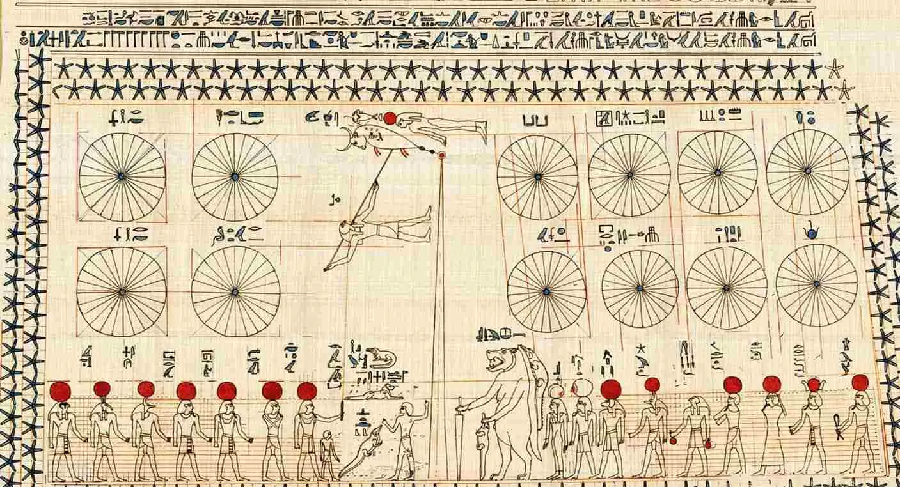
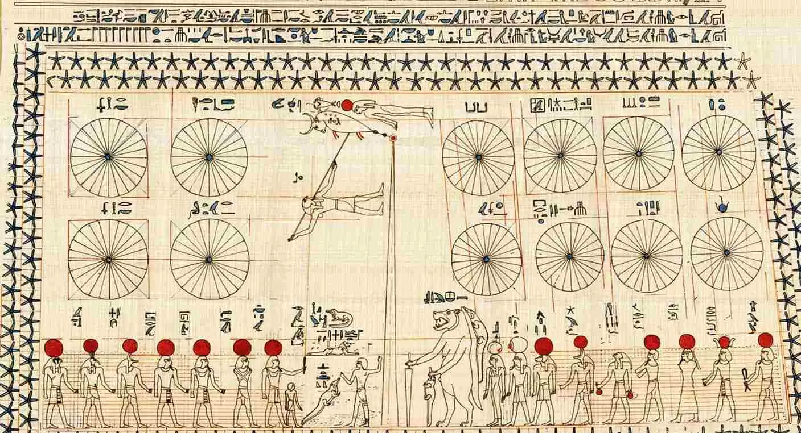
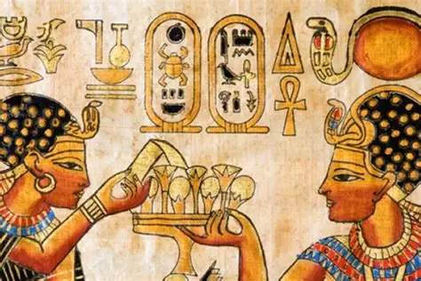

Who is Cleopatra?
Who Ruled for 66 years and built massive temples?
What is
 

Cosmetic Makeup |
The Egyptian invented eye makeup as far back as 4000 B.C. They combined
soot with a lead mineral called galena to create a black ointment known
as kohl. They also made green eye makeup by combining malachite with
galena to tint the ointment. Both men and women wore eye makeup did
believe it could cure eye diseases and keep them from falling victim to
the evil eye.

|